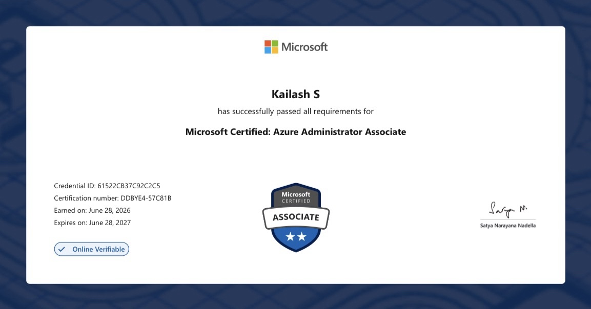
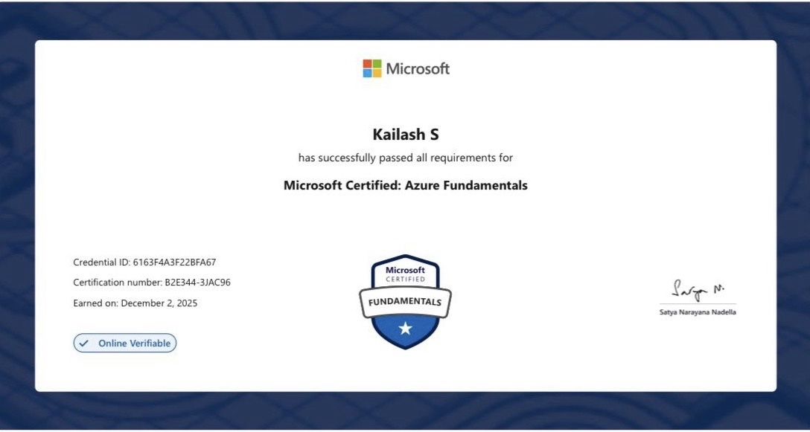
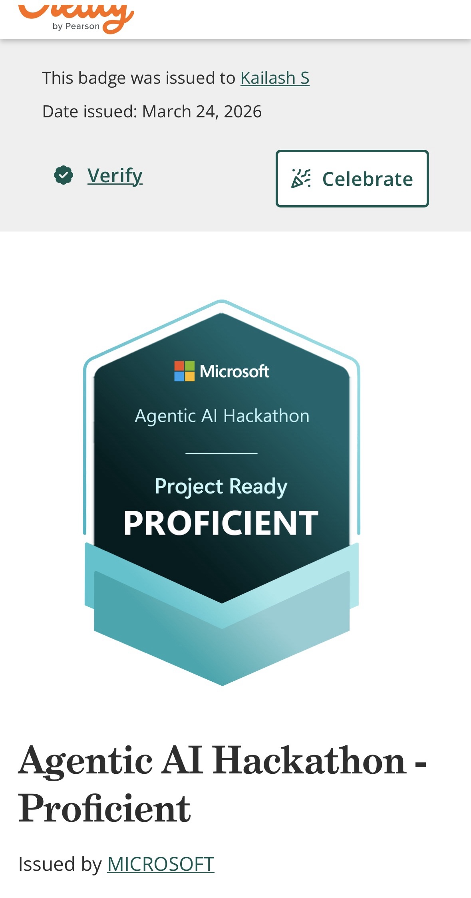

Azure Administrator
Building cloud solutions, automating infrastructure, and transforming ideas into production-ready systems.
Cloud and DevOps professional with hands-on experience in Microsoft Azure, Linux administration, Infrastructure as Code, Docker, GitHub Actions, VMware, and cloud operations.
Certified in Azure Fundamentals (AZ-900) and Azure Administrator (AZ-104), with practical experience building cloud-native solutions, CI/CD pipelines, automation workflows, and infrastructure deployments.
Passionate about Azure, platform engineering, modern DevOps practices, automation, and AI-driven innovation. Continuously learning and building projects that solve real-world infrastructure and operational challenges.

Microsoft Azure Administrator Associate

Microsoft Azure Fundamentals

Participated in Microsoft's Agentic AI Hackathon, exploring Azure AI technologies, agentic workflows, and next-generation AI-powered solutions.
Birlasoft · 2025
Birlasoft · 2025
Infrastructure / Cloud Engineer
BirlasoftAWS Cloud Intern
Cholamandalam Investment & Finance LtdA complete Azure DevOps and SRE project: REST APIs, CI/CD, infrastructure as code, secret management, and monitoring.
A dashboard showing CPU, memory, disk usage, and host information in real time.
Personal cloud engineer portfolio, hosted in Azure.
Real-time disaster management system with GPS tracking and SOS broadcasting.
Full-stack recommendation platform for personalized book discovery.